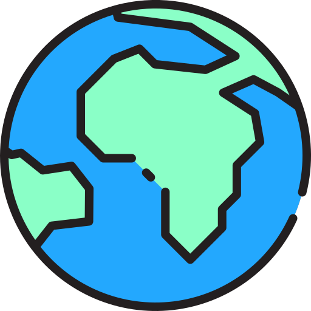

주제
자원을 아끼기위해 전기를 절약하기로 했다. 우리집에서 사용하는 형광등, LED, 컴퓨터등의 가전제품이 얼마나 많은 양의 전기를 사용하는지 알아보고 사용량을 절약하여 환경보호에 조금이나마 기여해보고자 한다.
보고서
들어가기에 앞서 나는 11월 27일부터 12월 1일까지 총 5일동안 기록하여 보고서를 작성하였고 ppt나 한글을 이용해 보고서를 작성하려고 하였으나 사용법을 몰라 HTML로 작성하였음을 알린다.
보고서는 총 8파트로 나눠져있다. 목차는 지금 보고있는 페이지인 커버 페이지, 주제에대해 알기위해 알아야할 기본 지식인 전기에 대한 기본, 1~5일차의 보고서, 그리고 마지막으로 후기가 있다.